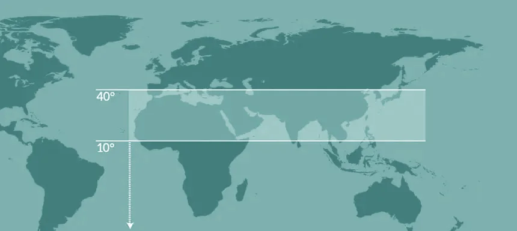
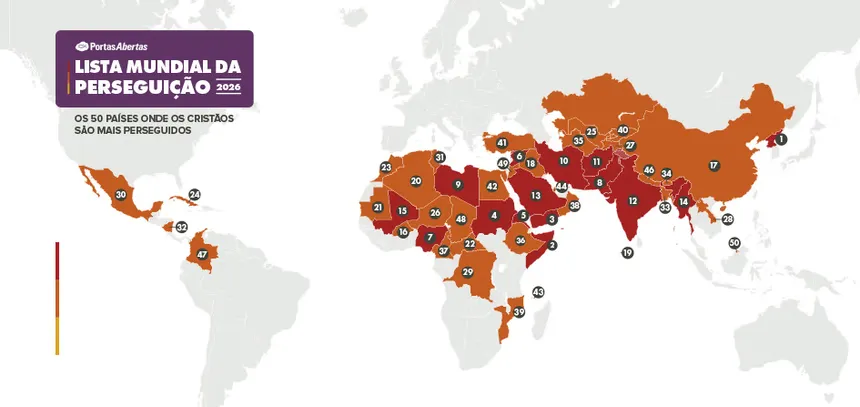

Missões
A tarefa inacabada
“Ide por todo o mundo e pregai o evangelho a toda criatura” (Marcos 16:15). A última ordem de Jesus ainda está em andamento. Esta página existe para a igreja ver o tamanho do campo e cada um encontrar o seu lugar nele.
O campo global
O mundo hoje
3,42 bilhões
de pessoas vivem em povos onde praticamente não há quem lhes anuncie o evangelho. São 42% de toda a humanidade.
- 7.188
- povos não alcançados, entre os 17.269 povos do mundo Joshua Project
- 1,9 bilhão
- de pessoas em 3.218 povos “de fronteira”, onde quase não existe nenhuma resposta ao evangelho Joshua Project
- 1.676
- línguas ainda não têm um único versículo da Bíblia traduzido Wycliffe Global Alliance · 2025
- 36,8 milhões
- de pessoas falam as 544 línguas que ainda esperam o início de uma tradução da Bíblia Wycliffe Global Alliance · 2025
“E este evangelho do Reino será pregado em todo o mundo, em testemunho a todas as nações, e então virá o fim.”
Geografia da necessidade
A Janela 10/40

Nessa faixa do mapa vivem a maior parte dos povos ainda não alcançados pelo evangelho. É a região dos grandes desertos, das megacidades da Ásia e do berço das principais religiões do mundo e, ao mesmo tempo, uma das regiões com menos obreiros cristãos por habitante.
Não por acaso, é também onde seguir a Cristo custa mais caro: a maior parte dos 50 países da Lista Mundial da Perseguição está dentro ou na borda dessa mesma faixa. Orar com um mapa aberto muda a forma como a igreja enxerga o mundo.

Perto de casa
O Brasil também é campo
Missões não começa no aeroporto. Em Atos 1:8, Jesus fala de Jerusalém, Judeia, Samaria e os confins da terra, ao mesmo tempo. A Amazônia é uma das últimas fronteiras missionárias do planeta, e a porta ao lado também é campo.
Na chamada Janela Amazônica, dezenas de comunidades indígenas só podem ser alcançadas de barco ou de avião, muitas sem nenhuma página da Bíblia em sua língua materna.
- 344
- etnias indígenas registradas no Brasil AMTB
- 164
- são consideradas não alcançadas pelo evangelho AMTB
- 99
- vivem sem nenhuma presença missionária ou igreja local AMTB
- 170+
- povos na Janela Amazônica, acessíveis apenas de barco ou avião AMTB
- 35
- etnias correm risco de desaparecer, com menos de 35 pessoas cada AMTB
- 16,4 mi
- de brasileiros declaram não ter religião alguma IBGE · Censo 2022
Sua parte
Ninguém pode fazer tudo.
Todos podem fazer algo.
“Como ouvirão, se não há quem pregue?” (Romanos 10:14). A resposta sempre envolve três movimentos: quem ora, quem vai e quem envia.
Ore
A obra começa de joelhos.
- Adote um povo não alcançado pelo nome e interceda por ele toda semana.
- Traga missões para o culto, a célula e a mesa de casa.
- Acompanhe os pedidos de missionários e responda com oração.
Vá
Disponibilidade vale mais que passaporte.
- Pergunte à liderança sobre viagens e projetos missionários.
- Sirva primeiro aqui: o seu bairro é o seu primeiro campo.
- Prepare-se: a capacitação bíblica começa na igreja local.
Contribua
Quem fica também envia.
- Sustente missionários com ofertas regulares.
- Apoie projetos de evangelização e tradução da Bíblia.
- Fale com a secretaria e conheça o que a ADVIC apoia.
A cena final já está escrita
“…uma grande multidão que ninguém podia contar, de todas as nações, tribos, povos e línguas…”
Apocalipse 7:9
Essa cena é o futuro. Missões é o caminho até lá.
Fontes: Joshua Project (2026) · Wycliffe Global Alliance (2025) · AMTB · IBGE, Censo Demográfico 2022 · Portas Abertas, Lista Mundial da Perseguição 2026